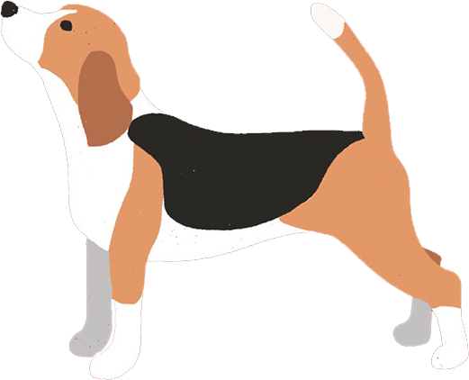
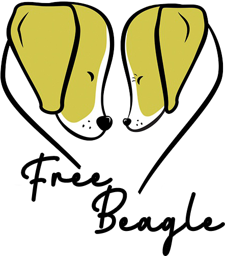

Beed To Suffer 
生而受苦
我们现在使用的化妆品，药品，甚至是各种设备，在问世之前都需要漫长的动物实验过程，以确保能够安全地使用在人体上。
许多国家规定任何正在开发的新药都必须在至少两种不同的活哺乳动物上进行测试，一般情况下是一种啮齿动物和一种非啮齿动物，比格犬就是使用最为广泛的非啮齿实验动物
实验犬需要反复进行手术，采血，强制性进食药物，杀虫剂或其他物质，然后观察药物是否对其产生了如心力衰竭，癌症甚至死亡等迹象的有害影响
有些实验犬一天就要被扎上200针，有些两三天就要被接种一次癌症疫苗，有些需要不停吸入或服下有毒物质，有些甚至被弄瞎眼睛且再也无法得到治愈
比格犬作为首选的实验犬，为我们的生活做出了巨大的牺牲与贡献，然而当它们从实验室退役之后，只有少数幸运的实验犬可能会得到救置和收养，用于测试和研究的大多数狗会被安乐死，特别是用于化学或药物测试的比格犬。
RESCUE. REHAB. REPEAT.
救助 · 安置 · 重复
「自由比格 · Free Beagle」是一家非营利性动物救助和宣传组织，也是全球领先的比格实验犬领养机构，致力于拯救和重新安置实验研究中所使用的比格犬。
目前我们的目标，是提升社会对比格实验犬的认知，呼吁大家理性对待比格实验犬，并通过力所能及的救助回报这些给予我们美好生活的幕后英雄们。
领养，是回报比格实验犬的最终归宿，也是「自由比格 · Free Beagle」极力促成的事情。
如果你萌生了领养狗狗的想法，请你考虑领养实验比格犬；
如果你愿意领养实验犬，请你考虑联系自由比格。
当人类生活的便利建立在某些生命的牺牲之上，我们理所应当地要给予它们更多的补偿。